浅埋隧道的开挖与支护
问题描述
注意
要在 FLAC3D 中查看此项目，请使用菜单命令 。选择“ExampleApplications/ExcavationAndSupport”，然后选择“ExcavationAnd… .f3dprj”进行加载。该项目的主数据文件（main data file）显示在本示例末尾。
在城市地区的软土中开挖一条浅埋隧道。重要的是尽量减小隧道对既有结构和服务设施的影响。地表沉降将取决于开挖方法和隧道加固类型。推进式隧道引起的地表沉降是一个很强的三维问题。分析中考虑了特殊的三维因素，包括地表的邻近以及隧道端部的影响。
针对以下施工方法计算地表沉降。该方法组合采用多种支护措施，以加固隧道掌子面前方的岩体。该方法的组成部分为：
- 开挖 3 m 深的槽；
- 安装钢拱架支护；
- 在隧道上方建造长 4 m、厚 22 cm 的倾斜槽并充填混凝土，作为预支护盾体；
- 在钢支架之间安装喷射混凝土衬砌；以及
- 在隧道掌子面安装水平锚索。
在推进的隧道掌子面后方安装厚混凝土衬砌。图 1（Figure 1） 示出了该方法的组成部分。为了评价支护方法对地表沉降的影响，数值分析应对每个组成部分进行模拟。

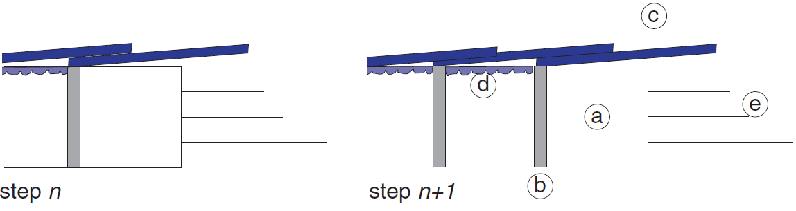
图 1：隧道支护方法的组成部分。
建模步骤
假定隧道中心存在竖直对称面，因此仅对隧道的一半进行建模。模型中模拟了 50 m 长的隧道；隧道底板位于地表以下 39.5 m 处。定义坐标轴系使原点位于隧道底板；\(z\) 轴指向上方，\(y\) 轴沿隧道轴线方向。FLAC3D 网格如图 2（Figure 2） 所示。模型包含约 15,000 个网格单元；沿隧道轴线方向布置 50 个网格单元。
隧道修建于软弱岩体中，该岩体模拟为黏聚力 50 kPa、摩擦角 20° 的 Mohr-Coulomb 材料。材料质量密度为 2200 kg/m3。
初始应力状态对应于重力荷载，竖向与水平应力之间的关系为：\(σ'_{zz}\) = \(σ'_{xx}\) = 2.0\(σ'_{yy}\)。

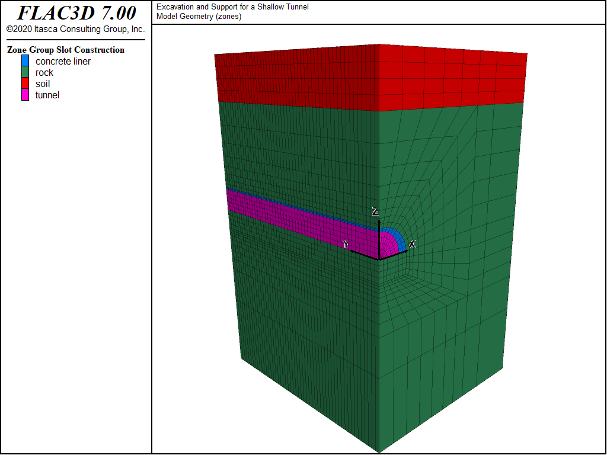
图 2：隧道模型网格。
预支护混凝土和喷射混凝土采用壳结构单元模拟，而混凝土隧道衬砌采用网格单元模拟（混凝土衬砌厚度相对于隧道半径较大），这些网格单元被指定代表衬砌材料的性质。FLAC3D 网格单元能较好地近似厚衬砌的弯曲，因为每个网格单元由两层共五个四面体子网格组成。图 3（Figure 3） 显示了代表预支护混凝土和喷射混凝土的壳结构单元（隧道开挖 30 m 后）。混凝土衬砌如图 4（Figure 4） 所示。

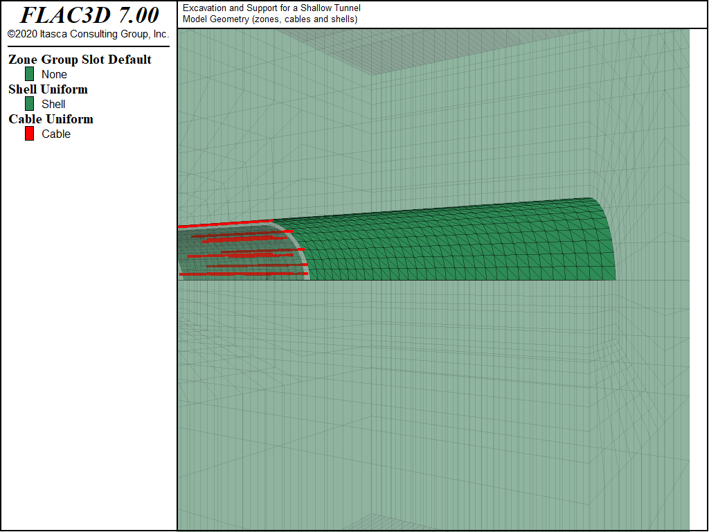
图 3：施工第 10 步（开挖 30 m）时安装的结构单元（壳单元和锚索）。
衬砌各组成部分模拟为弹性材料，其性质列于 表 1（Table 1） 和表 2（Table 2）。
| 杨氏模量 | \(E\) | 10.5 GPa |
| 泊松比 | \(ν\) | 0.25 |
| 杨氏模量 | \(E\) | 31.4 GPa |
| 泊松比 | \(ν\) | 0.25 |
分析中仅使用一层壳结构单元来代表预支护混凝土和喷射混凝土，其厚度相应变化。请注意，本示例未显式模拟钢拱架支护，其效应已与喷射混凝土的效应合并考虑。
隧道掌子面处安装的水平锚索中，锚索材料和注浆体的性质见 表 3（Table 3）。
| 锚索模量 | 45 GPa |
| 锚索面积 | 1.57 × 10-3 m2 |
| 锚索极限抗拉能力 | 250 kN |
| 注浆体黏结刚度 | 1.75 × 107 N/m2 |
| 注浆体黏结强度 | 2.0 × 105 N/m |
安装了长 9 m、12 m 和 15 m 的组合锚杆。锚杆安装过程（交替）使用三种不同的锚杆布置形式。
隧道分两期施工。首先开挖并支护隧道的上部拱形部分。然后开挖并支护隧道的下部。本示例仅说明第一阶段的分步分析；第二期施工将遵循此处演示的相同流程。
第一期的开挖和支护安装按图 1（Figure 1） 所示的两步顺序分步进行。文件“tunnel-excavation.f3fis 文件（tunnel-excavation.f3fis）”中定义的 FISH 函数 开挖（excavate） 用于控制开挖和支护安装过程。每一步中，开挖推进 3 m，并在距掌子面指定距离处安装预支护混凝土盾体、锚索、喷射混凝土和厚混凝土衬砌。

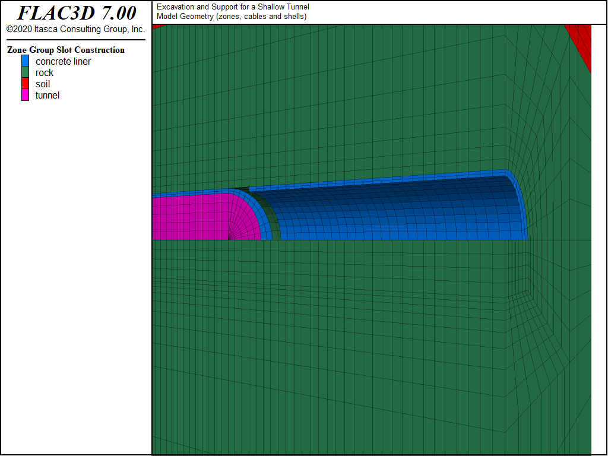
图 4：模型中网格单元的分组。
为了用壳单元安装连续衬砌，将新壳单元赋予与上一步已有壳单元相同的标识号。这样新壳单元在与已有壳单元连接处将使用已有节点。新壳单元初始应力为零。
整个施工过程中监测地表沉降和隧道收敛。这些数值在每一步施工结束时记录并保存在表格中。
共执行十五个依次进行的开挖和支护步骤。每一步施工都运行至平衡，收敛判据采用 ratio-local 1e-3。
结果
部分结果如图 5（Figure 5） 至图 11（Figure 11） 所示。隧道沿线某点（距隧道起点 30 m 处）的位移历史绘制于图 5（Figure 5） 中。30 m 位置处的竖向位移（地表和隧道拱顶）与水平位移（隧道边墙底部）均以 50 m 开挖长度作为横坐标绘制。
开挖 30 m 后隧道周围塑性区的范围如图 6（Figure 6） 所示。不同颜色区分剪切破坏和拉伸破坏。后缀 n（例如 shear-n）表示该网格单元当前处于活动破坏状态；后缀 p 表示该网格单元在先前的开挖步骤中已经破坏。开挖 30 m 后模型中的竖向位移云图如图 7（Figure 7） 所示。
弯矩内力 \(M_{xx}\) 的云图分别如图 8（Figure 8） 和图 9（Figure 9） 所示（分别为开挖 15 m 和 27 m 后）。结果以局部坐标系表示，其中 \(x\) 轴与全局 \(y\) 轴重合。
锚索中的轴力分别如图 10（Figure 10） 和图 11（Figure 11） 所示（分别为开挖 15 m 和 27 m 后）。

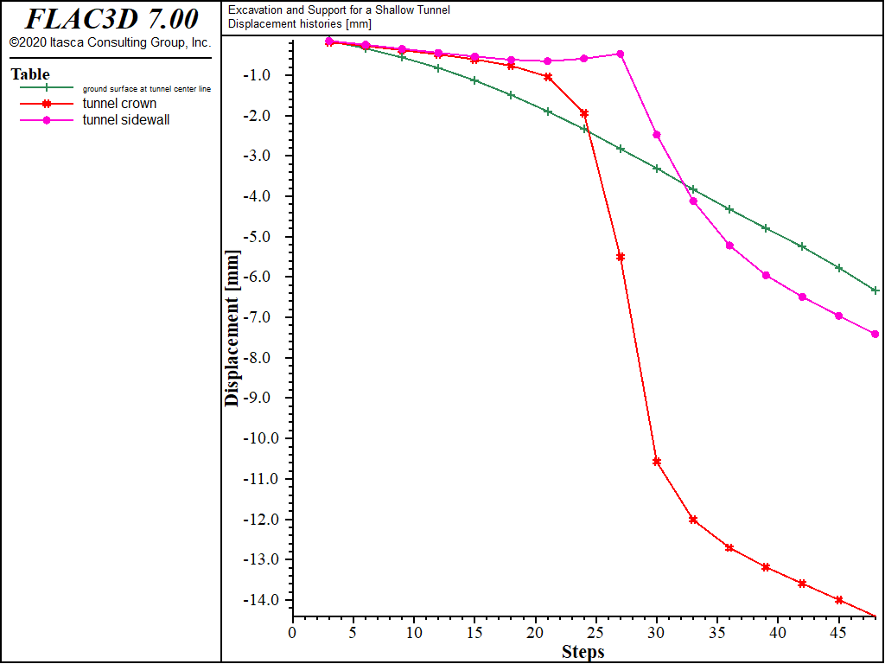
图 5：沿隧道 30 m 位置处的位移历史：表 1 = x = 0 处的地表；表 2 = 隧道拱顶；表 3 = 隧道边墙。

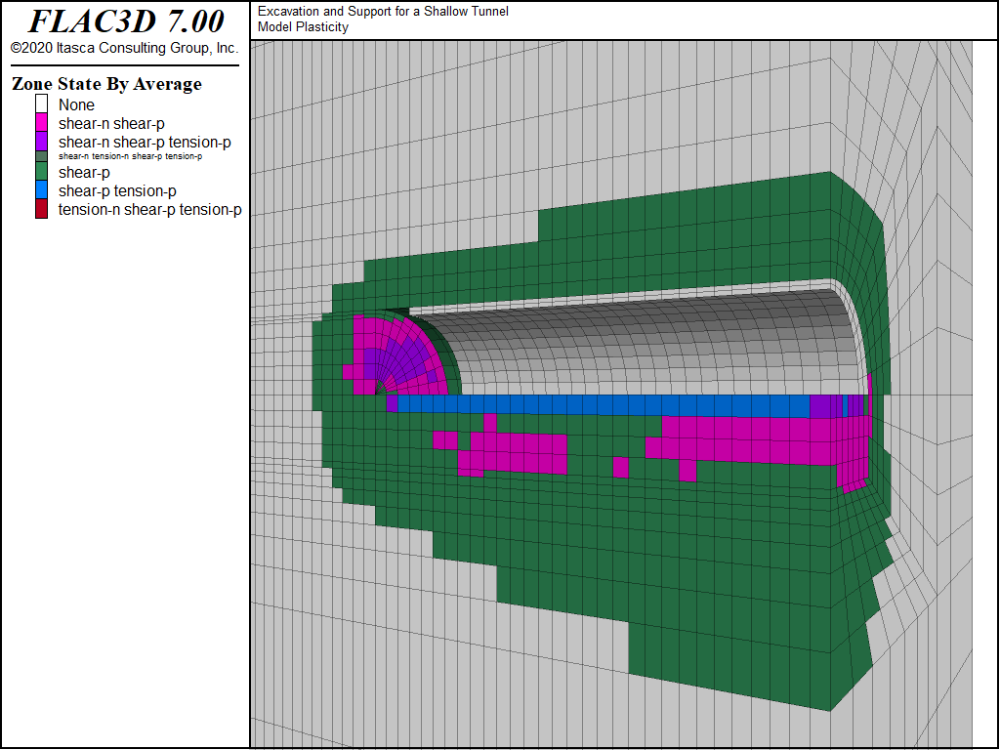
图 6：开挖 30 m 后的塑性区。

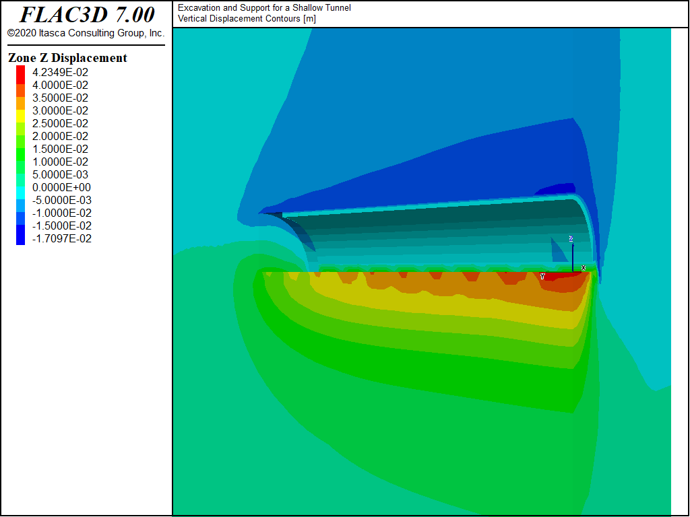
图 7：开挖 30 m 后的竖向位移云图。

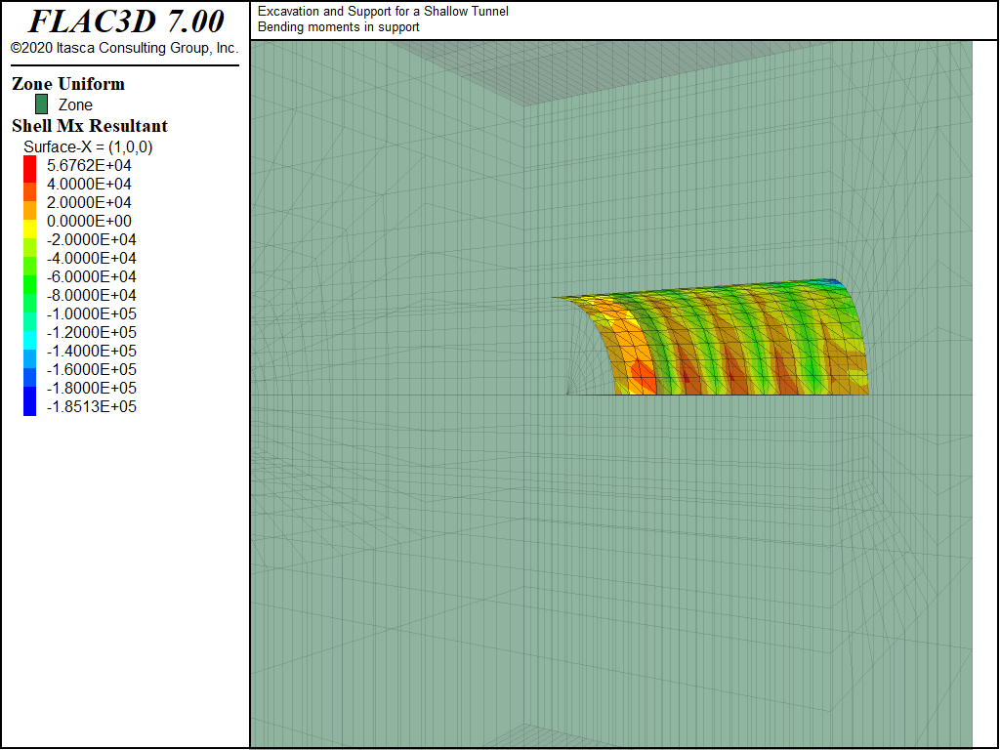
图 8：开挖 15 m 后预支护混凝土和喷射混凝土中的弯矩（视图中隐藏隧道和衬砌网格单元）。

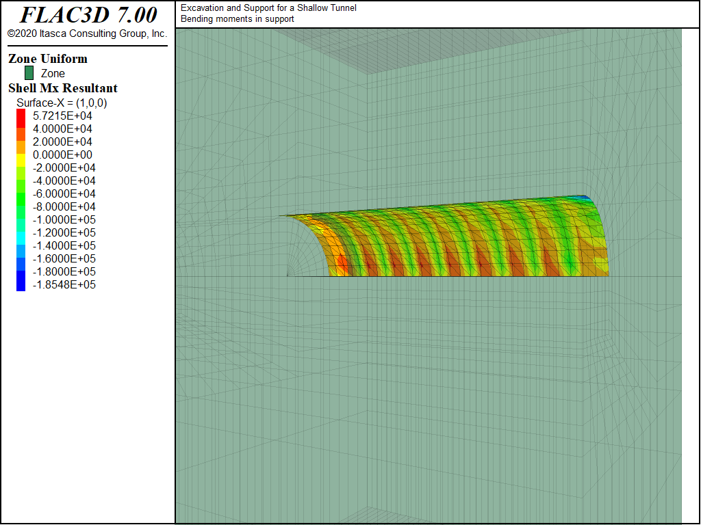
图 9：开挖 27 m 后预支护混凝土和喷射混凝土中的弯矩（视图中隐藏隧道和衬砌网格单元）。

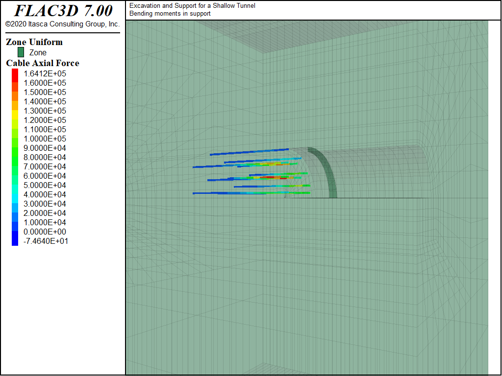
图 10：开挖 15 m 后锚索中的轴力。

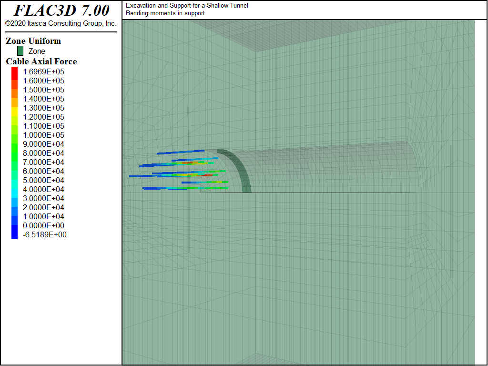
图 11：开挖 27 m 后锚索中的轴力。
数据文件
ExcavationAndSupportOfShallowTunnel.dat
;-----------------------------------------------------
; ---- 浅埋隧道的开挖与支护 ---
;-----------------------------------------------------
model new
model large-strain off
fish automatic-create off
model title 'Excavation and Support for a Shallow Tunnel'
;使用 Extruder 工具生成网格
program call 'geometry' suppress
zone generate from-extruder
zone face skin ; 标记模型边界
; 赋予摩尔-库仑材料模型和参数
zone cmodel assign mohr-coulomb
zone property bulk 4e8 shear 1.5e8 friction 20 cohesion 50e3 ...
tension 5e3 dilation 3 density 2200
zone property bulk 50e6 shear 18e6 friction 20 cohesion 25e3 ...
tension 0 dilation 0 density 2200 range group 'soil'
; 施加边界条件
zone face apply velocity-normal 0 range group 'East' or 'West'
zone face apply velocity-normal 0 range group 'North' or 'South'
zone face apply velocity-normal 0 range group 'Bottom'
; 赋予初始应力状态
model gravity 10
zone initialize-stresses ratio 1.0 0.5
; 监测模型中的变量
model history mechanical ratio-local
zone history displacement-z position (0,0,5.)
zone history displacement-x position (7,0,0)
zone history displacement-z position (0,0,0)
zone history displacement-z position (0,0,35)
; 保存初始几何
model save 'geometry'
; 定义锚索布置形式
program call 'tunnel-cable'
; 安装初始锚索，如同处于施工序列中间阶段
struct cable import from-geometry 'cables' ...
segments 15 id 1 offset (0,-6,0) range group '1'
struct cable import from-geometry 'cables' ...
segments 15 id 2 offset (0,-3,0) range group '2'
struct cable import from-geometry 'cables' ...
segments 15 id 3 range group '3'
struct cable delete range position-y -100 0 ; 删除模型外的单元
struct cable property young 45e9 cross-sectional-area 1.57e-3 ...
grout-perimeter 1.0 yield-tension 25e4 ...
grout-stiffness 17.5e6 grout-cohesion 20e4 ...
range id 1 3
; 安装超前支护混凝土
struct shell create by-zone-face ...
internal reverse id 10 range group 'shell' position-y 0 1
struct shell property isotropic 10.5e9,0.25 thickness 0.3 ...
density 2500 range id 10
; 定义一些点和表，用于在开挖过程中记录数据
[global surface_gp = gp.near(0,30,35)]
[global crown_gp = gp.near(0,30,5.5)]
[global spring_gp = gp.near(7,30,0)]
table 'surface' label 'ground surface at tunnel center line'
table 'crown' label 'tunnel crown'
table 'sidewall' label 'tunnel sidewall'
; 求解至初始平衡
model solve convergence 1.0
; 保存模型初始状态
model save 'initial'
zone results model-mechanical on
; 该 FISH 函数实际执行开挖与支护工序
program call 'tunnel-excavation'
[excavate]
model solve convergence 1
; 保存最终状态
model save 'excavation'
tunnel-excavation.dat
;
; 控制开挖与支护工序的 FISH 函数
;
fish define excavate
; 执行 16 个开挖步
loop global cut (1,16) ; 将 cut 设为全局变量，只是为了能看出
; 我们在 FISH 浏览器中的位置
local y0 = 3*(cut-1) ; 开挖起始位置
local y1 = y0 + 3 ; 开挖深度 3 m
local id = 10 ; 壳单元的 ID 号
; id = 10*(cut+1) ; 若壳单元互不连接时使用
local idx = ((cut-1)%3) + 1 ; 锚索布置形式的索引
io.out(' EXCAVATION STEP ' + string(cut) + ' CABLE PATTERN ' ...
+ string(idx))
; 安装超前支护混凝土、开挖并删除
; 开挖区域内的锚索。
command
; 安装超前支护混凝土
struct shell create by-zone-face internal reverse id [id] ...
range group 'shell' position-y [y0+1] [y1+1]
struct shell property isotropic (10.5e9,0.25) thickness 0.3 ...
density 2500 range position-y [y0+1] [y1+1]
; 开挖下一进尺
zone cmodel assign null ...
range group 'tunnel' or 'concrete liner' position-y [y0] [y1]
; 删除开挖区域内的锚索
struct cable delete range position-y [y0] [y1]
; 按布置形式安装新锚索
struct cable delete range id [idx]
struct cable import from-geometry 'cables' segments 15 id ...
[idx] offset (0,[y1],0) range group [string(idx)]
struct cable property young 45e9 cross-sectional-area 1.57e-3 ...
grout-perimeter 1.0 yield-tension 25e4 ...
grout-stiffness 17.5e6 grout-cohesion 20e4
; 增大壳单元厚度以模拟喷射混凝土
struct shell property isotropic 10.5e9,0.25 thickness 0.5 ...
density 2500 range position-y [y0-2] [y1-2]
end_command
if y1+15 > 51 then ; 必要时删除模型外的锚索单元
command
struct cable delete range position-y 51 100
end_command
end_if
; 恢复用网格单元模拟的混凝土衬砌。
if cut > 1 then
command
zone cmodel assign elastic ...
range group 'concrete liner' position-y [y0-3] [y1-3]
zone property bulk 20.7e9 shear 12.6e9 ...
range group 'concrete liner' position-y [y0-3] [y1-3]
end_command
end_if
; 求解至平衡
command
model solve convergence 10
end_command
; 将位移存入表
table('surface',3*cut) = gp.disp.z(surface_gp)
table('crown',3*cut) = gp.disp.z(crown_gp)
table('sidewall',3*cut) = gp.disp.z(spring_gp)
; 导出结果
command
model results export ['excavation-'+string(cut*3)]
end_command
end_loop
end
⇐ One-Dimensional Consolidation Considering Secondary Compression | Grid Generation for Intersecting Tunnels ⇒
| 这些内容对您有帮助吗？… | FLAC3D © 2019, Itasca | 原文更新于 2020 年 10 月 8 日 |